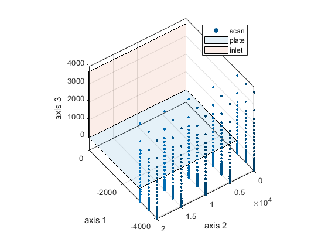
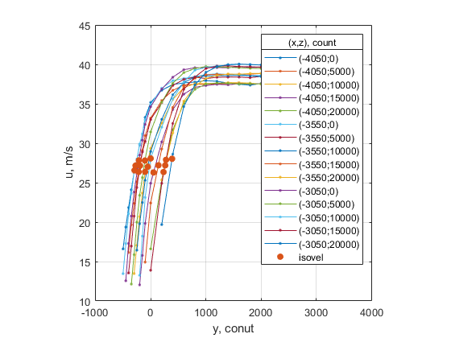

Description
This is a MATLAB function named `findoffsetcta` that takes several input parameters and performs various operations to find the offset vertical coordinates by specified velocity isoline level. Here's a breakdown of the function:
*Input Parameters*
The function accepts several input parameters:
- `filename`: The path to a scan.txt file or folder.
- `kwargs`: A structure containing various keyword arguments.
The `kwargs` structure has the following fields:
- `scandelimiter`: The delimiter used in the scan file (default: `\t`).
- `scanseparator`: The separator used in the scan file (default: `,`).
- `numch`: The number of channels (default: 3).
- `isovel`: The cutoff velocity (default: 10).
- `y`: A vertical vector (optional).
- `yi`: An initial approximation for the offset vertical coordinates (optional).
- `ratio`: A dimensionless velocity at which the vertical position is assumed to be zero (optional).
- `reshape`: The reshape of the scan data (optional, default: `[numel(unique(y)), numel(unique(z)), numel(unique(x))]`).
- `smooth`: The smoothing method used (optional, default: `'none'`).
- `span`: The number of data points for calculating the smoothed value (optional).
- `show`: A flag indicating whether to display results (default: `true`).
- `docked`: A flag indicating whether to dock the figure (default: `false`).
*Function Flow*
The function performs the following steps:
1. Checks if the input file is a folder or a file and loads the data accordingly. 2. Extracts the x, z, and v values from the data. 3. Reshapes the data according to the specified reshape value. 4. Excludes near wall points by setting velocity and vertical coordinates to NaN where velocity is less than the cutoff velocity. 5. Smooths the profiles using the specified smoothing method (if not `none`). 6. Performs piecewise linear interpolation on each channel using the `fit` function. 7. Finds the offset vertical coordinates using the `fsolve` function, which minimizes the difference between the interpolated values and the desired isoline level. 8. Displays the results in a figure if the `show` flag is set.
*Output*
The function returns three output values:
- `y0`: The offset vertical coordinates.
- `z0`: The z-coordinate of the point where the velocity is assumed to be zero (if specified).
- `x0`: The x-coordinate of the point where the velocity is assumed to be zero (if specified).
Overall, this function appears to be designed to find the offset vertical coordinates for a given scan data file, taking into account various smoothing and interpolation techniques.
Contents
Examples
This section presents a example of the usage of finding offset by measured velocity profiles.
Generate a scan grid to measure vertical velocity profiles, import measurements, find offset vertical position
scangridzeros = gridcta([-4050, -3550, -3050], 0:5e3:20e3, flip([-400:50:200, 300:200:2500, 3000, 4000]-300),... filename = 'docs\src\findoffsetcta\scan_zeros') [ax30, ax20, ax10] = findoffsetcta('docs\src\findoffsetcta\data',... isovel = 12, ratio = 0.7, y = scangridzeros(:,3), smooth = 'moving', span = 3)
scangridzeros =
-4050 0 3700
-4050 0 2700
-4050 0 2200
-4050 0 2000
-4050 0 1800
-4050 0 1600
-4050 0 1400
...
 